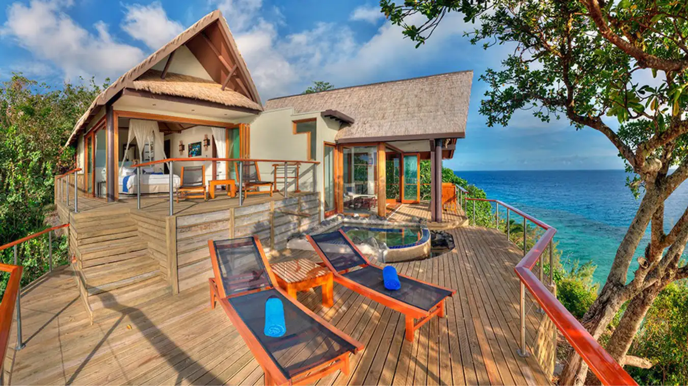
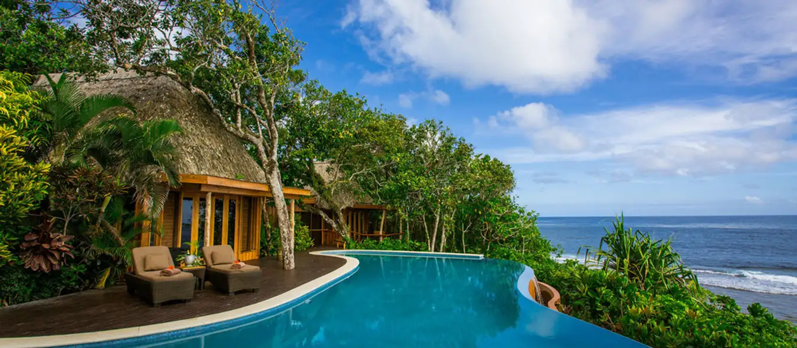

Khu nghỉ dưỡng Royal Davui Island Resort cách xa trung tâm của Fiji và chỉ có thể đến bằng trực thăng hoặc thuyền. Có 16 biệt thự mái tranh, mỗi biệt thự đều có bể ngâm riêng và tầm nhìn ra Đầm phá Beqaa. Bạn sẽ được trải nghiệm tự do trên ốc đảo của riêng mình, đi bụi và lặn với ống thở để xem rùa và cá heo.
Những khu nghỉ dưỡng biệt thự sang trọng hướng biển hoặc hướng vườn là lựa chọn hàng đầu cho các cặp đôi trong tuần trăng mật. Tại Namale Fiji Resort & Spa, du khách có thể sử dụng tất cả các dịch vụ như sân golf, spa, hồ bơi, lặn biển và thưởng thức các món ăn ngon tại đây.
Ẩn mình trên Đảo Yanuca xinh đẹp, Shangri-La's Resort and Spa là thiên đường của sự yên tĩnh giúp du khách thư giãn và trẻ hóa một cách thoải mái nhất có thể. Khi đi du lịch Fuji, nhiều cặp đôi đã chọn khu nghỉ dưỡng này để tận hưởng tuần trăng mặt của mình.